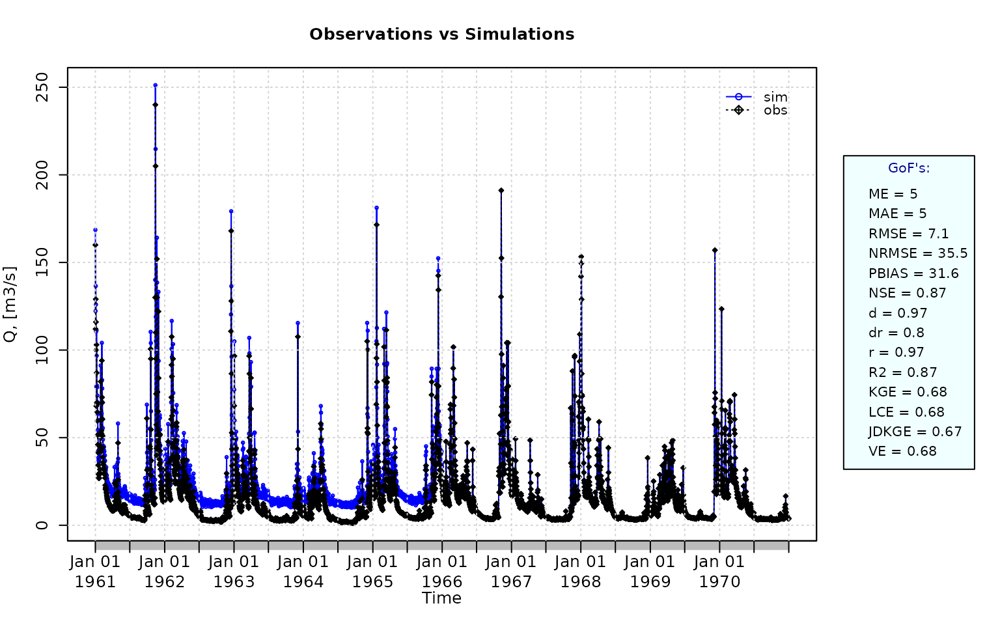
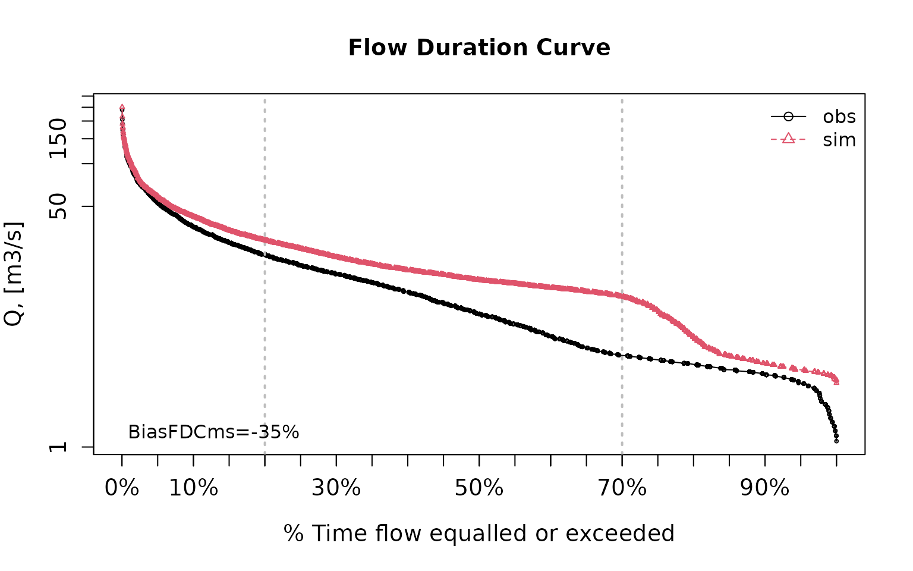
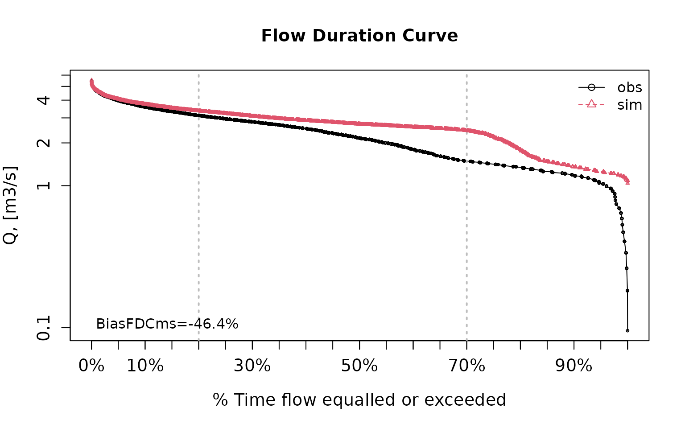
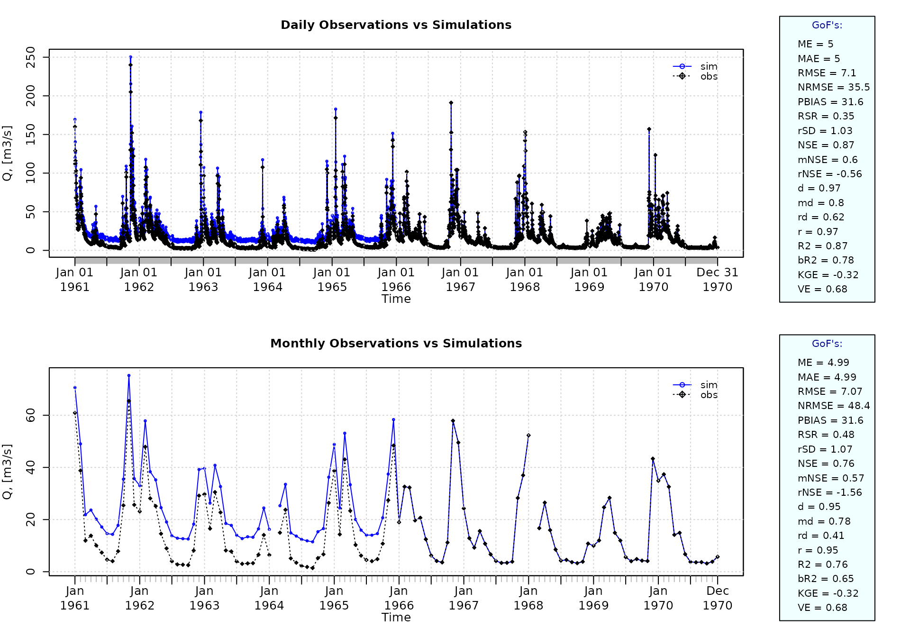
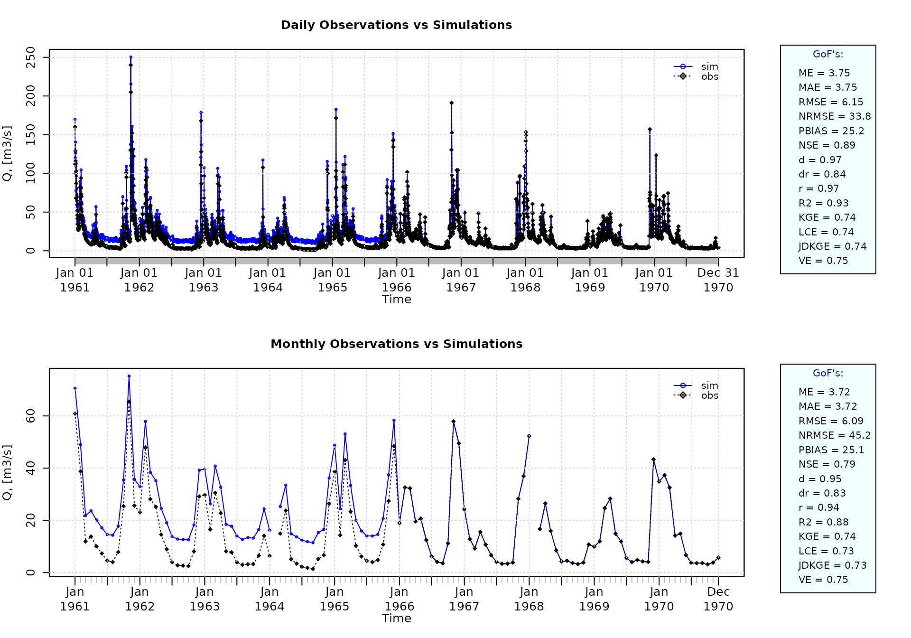
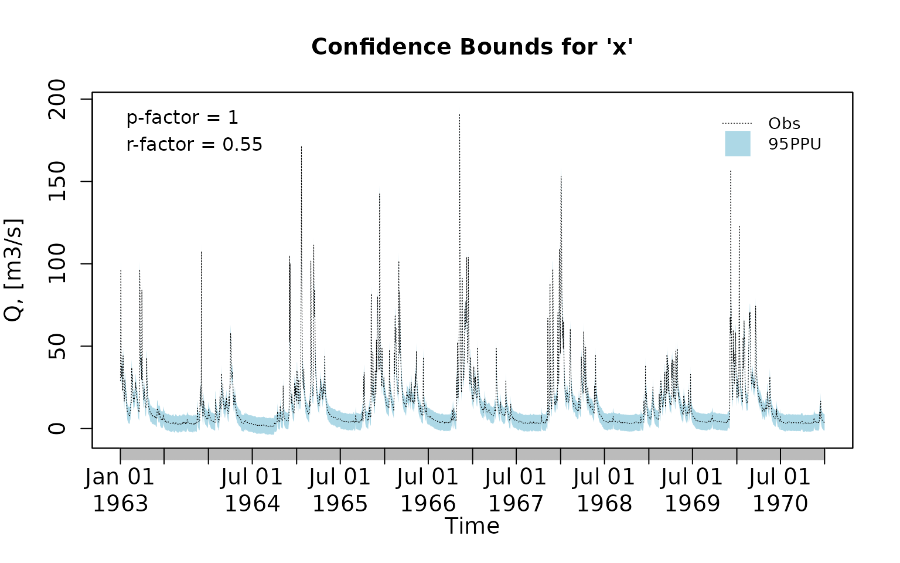
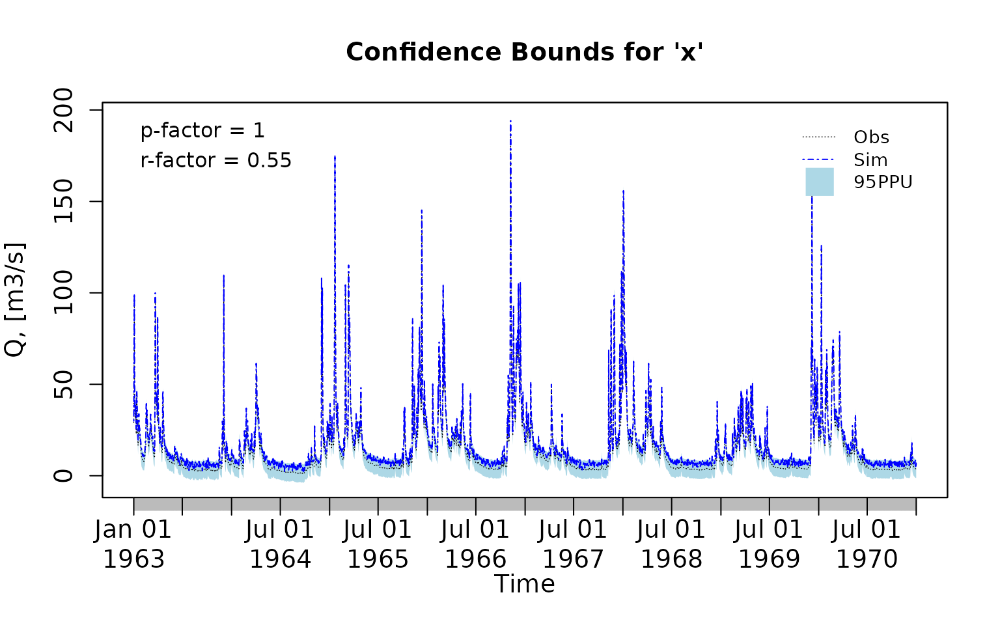
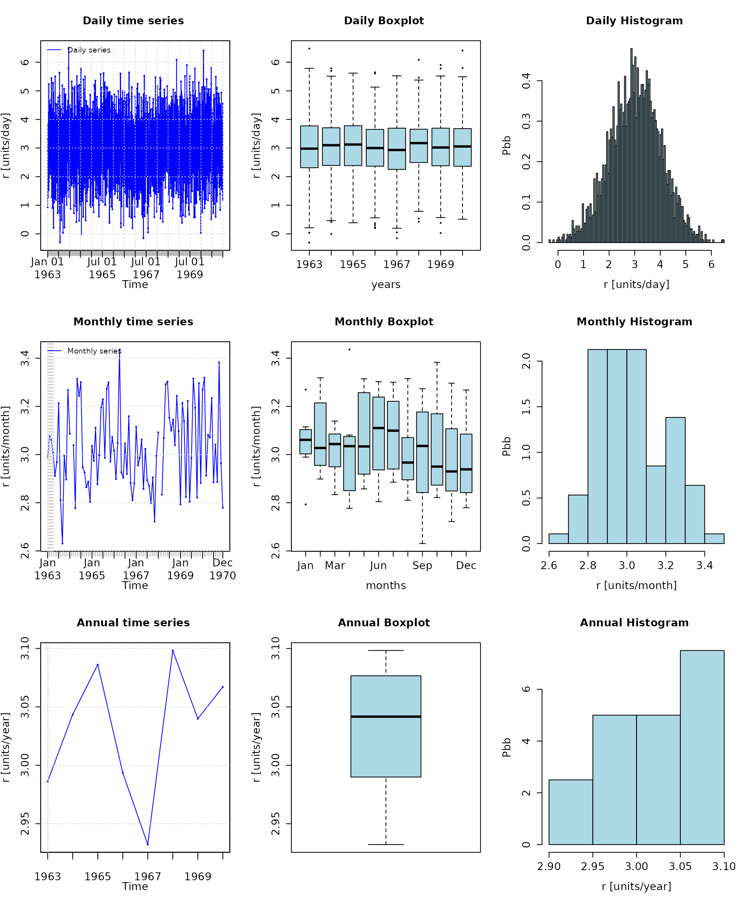
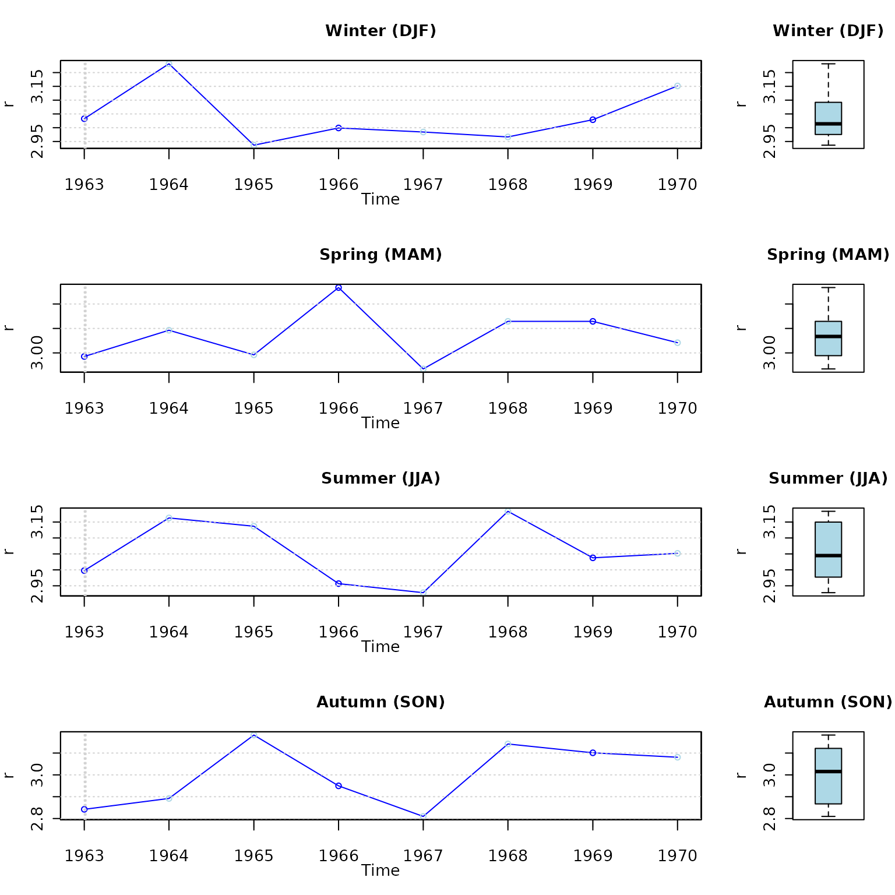

Goodness-of-fit measures to compare observed and simulated time series with hydroGOF
Mauricio Zambrano-Bigiarini1
version 0.3, 21-Jan-2024
Source:vignettes/hydroGOF_Vignette.Rmd
hydroGOF_Vignette.RmdCitation
If you use hydroGOF, please cite it as Zambrano-Bigiarini (2024):
Zambrano-Bigiarini, M. (2024) hydroGOF: Goodness-of-fit functions for comparison of simulated and observed hydrological time series R package version 0.5-4. URL: https://cran.r-project.org/package=hydroGOF. doi:10.5281/zenodo.839854.
Installation
Installing the latest stable version (from CRAN):
install.packages("hydroGOF")Alternatively, you can also try the under-development version (from Github):
if (!require(devtools)) install.packages("devtools")
library(devtools)
install_github("hzambran/hydroGOF")Setting up the environment
Loading the hydroGOF package, which contains data and functions used in this analysis:
## Loading required package: zoo##
## Attaching package: 'zoo'## The following objects are masked from 'package:base':
##
## as.Date, as.Date.numericExample using NSE
The following examples use the well-known Nash-Sutcliffe efficiency (NSE), but you can repeat the computations using any of the goodness-of-fit measures included in the hydroGOF package (e.g., KGE, ubRMSE, dr).
Example 1
Basic ideal case with a numeric sequence of integers:
obs <- 1:10
sim <- 1:10
NSE(sim, obs)## [1] 1
obs <- 1:10
sim <- 2:11
NSE(sim, obs)## [1] 0.8787879Example 2
From this example onwards, a streamflow time series will be used.
First, we load the daily streamflows of the Ega River (Spain), from 1961 to 1970:
data(EgaEnEstellaQts)
obs <- EgaEnEstellaQtsGenerating a simulated daily time series, initially equal to the observed series:
sim <- obs Computing the ‘NSE’ for the “best” (unattainable) case
NSE(sim=sim, obs=obs)## [1] 1Example 3
NSE for simulated values equal to observations plus random noise on the first half of the observed values.
This random noise has more relative importance for low flows than for medium and high flows.
Randomly changing the first 1826 elements of ‘sim’, by using a normal distribution with mean 10 and standard deviation equal to 1 (default of ‘rnorm’).

NSE(sim=sim, obs=obs)## [1] 0.8739885Let’s have a look at other goodness-of-fit measures:
mNSE(sim=sim, obs=obs) # modified NSE## [1] 0.6049584
rNSE(sim=sim, obs=obs) # relative NSE## [1] -0.5687206
KGE(sim=sim, obs=obs) # Kling-Gupta efficiency (KGE), 2009## [1] 0.6805856
KGE(sim=sim, obs=obs, method="2012") # Kling-Gupta efficiency (KGE), 2012## [1] 0.61689
KGElf(sim=sim, obs=obs) # KGE for low flows## [1] 0.5170138
KGEnp(sim=sim, obs=obs) # Non-parametric KGE## [1] 0.6340134
sKGE(sim=sim, obs=obs) # Split KGE## [1] 0.6547522
d(sim=sim, obs=obs) # Index of agreement (d)## [1] 0.9697286
rd(sim=sim, obs=obs) # Relative d## [1] 0.6231506
md(sim=sim, obs=obs) # Modified d## [1] 0.7980307
dr(sim=sim, obs=obs) # Refined d## [1] 0.8024792
VE(sim=sim, obs=obs) # Volumetric efficiency## [1] 0.6838531
cp(sim=sim, obs=obs) # Coefficient of persistence## [1] 0.4683536
pbias(sim=sim, obs=obs) # Percent bias (PBIAS)## [1] 31.6
pbiasfdc(sim=sim, obs=obs) # PBIAS in the slope of the midsegment of the FDC## [Note: 'thr.shw' was set to FALSE to avoid confusing legends...]
## [1] -34.95419
rmse(sim=sim, obs=obs) # Root mean square error (RMSE)## [1] 7.104063
ubRMSE(sim=sim, obs=obs) # Unbiased RMSE## [1] 5.047547
rPearson(sim=sim, obs=obs) # Pearson correlation coefficient## [1] 0.9698058
rSpearman(sim=sim, obs=obs) # Spearman rank correlation coefficient## [1] 0.8362479
R2(sim=sim, obs=obs) # Coefficient of determination (R2)## [1] 0.8739885
br2(sim=sim, obs=obs) # R2 multiplied by the slope of the regression line## [1] 0.7780545Example 4:
NSE for simulated values equal to observations plus random noise on the first half of the observed values and applying (natural) logarithm to ‘sim’ and ‘obs’ during computations.
NSE(sim=sim, obs=obs, fun=log)## [1] 0.4799297Verifying the previous value:
## [1] 0.4799297Let’s have a look at other goodness-of-fit measures:
mNSE(sim=sim, obs=obs, fun=log) # modified NSE## [1] 0.4822804
rNSE(sim=sim, obs=obs, fun=log) # relative NSE## [1] -4.560383
KGE(sim=sim, obs=obs, fun=log) # Kling-Gupta efficiency (KGE), 2009## [1] 0.7160166
KGE(sim=sim, obs=obs, method="2012", fun=log) # Kling-Gupta efficiency (KGE), 2012## [1] 0.6354924
KGElf(sim=sim, obs=obs) # KGE for low flows (it does not allow 'fun' argument)## [1] 0.5170138
KGEnp(sim=sim, obs=obs, fun=log) # Non-parametric KGE## [1] 0.7437751
sKGE(sim=sim, obs=obs, fun=log) # Split KGE## [1] 0.4650784
d(sim=sim, obs=obs, fun=log) # Index of agreement (d)## [1] 0.8609788
rd(sim=sim, obs=obs, fun=log) # Relative d## [1] -0.4863585
md(sim=sim, obs=obs, fun=log) # Modified d## [1] 0.7385673
dr(sim=sim, obs=obs, fun=log) # Refined d## [1] 0.7411402
VE(sim=sim, obs=obs, fun=log) # Volumetric efficiency## [1] 0.8124419
cp(sim=sim, obs=obs, fun=log) # Coefficient of persistence## [1] -7.948224
pbias(sim=sim, obs=obs, fun=log) # Percent bias (PBIAS)## [1] 18.8
pbiasfdc(sim=sim, obs=obs, fun=log) # PBIAS in the slope of the midsegment of the FDC## [Note: 'thr.shw' was set to FALSE to avoid confusing legends...]
## [1] -46.39001
rmse(sim=sim, obs=obs, fun=log) # Root mean square error (RMSE)## [1] 0.6955452
ubRMSE(sim=sim, obs=obs, fun=log) # Unbiased RMSE## [1] 0.5520467
rPearson(sim=sim, obs=obs, fun=log) # Pearson correlation coefficient (r)## [1] 0.8221915
rSpearman(sim=sim, obs=obs, fun=log) # Spearman rank correlation coefficient (rho)## [1] 0.8362479
R2(sim=sim, obs=obs, fun=log) # Coefficient of determination (R2)## [1] 0.4799297
br2(sim=sim, obs=obs, fun=log) # R2 multiplied by the slope of the regression line## [1] 0.4299904Example 5
NSE for simulated values equal to observations plus random noise on the first half of the observed values and applying (natural) logarithm to ‘sim’ and ‘obs’ and adding the Pushpalatha2012 constant during computations
NSE(sim=sim, obs=obs, fun=log, epsilon.type="Pushpalatha2012")## [1] 0.4871177Verifying the previous value, with the epsilon value following Pushpalatha2012:
## [1] 0.4871177Let’s have a look at other goodness-of-fit measures:
gof(sim=sim, obs=obs, fun=log, epsilon.type="Pushpalatha2012", do.spearman=TRUE, do.pbfdc=TRUE)## [,1]
## ME 0.41
## MAE 0.41
## MSE 0.46
## RMSE 0.68
## ubRMSE 0.54
## NRMSE % 71.60
## PBIAS % 18.20
## RSR 0.72
## rSD 0.89
## NSE 0.49
## mNSE 0.48
## rNSE -2.08
## wNSE 0.74
## wsNSE 0.78
## d 0.86
## dr 0.74
## md 0.74
## rd 0.18
## cp -7.68
## r 0.83
## R2 0.49
## bR2 0.44
## VE 0.82
## KGE 0.72
## KGElf 0.52
## KGEnp 0.74
## KGEkm 0.74
## sKGE 0.53
## APFB 0.01
## HFB 0.98
## rSpearman 0.84
## pbiasFDC % -45.87Example 6
NSE for simulated values equal to observations plus random noise on the first half of the observed values and applying (natural) logarithm to ‘sim’ and ‘obs’ and adding a user-defined constant during computations
eps <- 0.01
NSE(sim=sim, obs=obs, fun=log, epsilon.type="otherValue", epsilon.value=eps)## [1] 0.4804Verifying the previous value:
## [1] 0.4804Let’s have a look at other goodness-of-fit measures:
gof(sim=sim, obs=obs, fun=log, epsilon.type="otherValue", epsilon.value=eps, do.spearman=TRUE, do.pbfdc=TRUE)## [,1]
## ME 0.42
## MAE 0.42
## MSE 0.48
## RMSE 0.69
## ubRMSE 0.55
## NRMSE % 72.10
## PBIAS % 18.70
## RSR 0.72
## rSD 0.88
## NSE 0.48
## mNSE 0.48
## rNSE -4.22
## wNSE 0.74
## wsNSE 0.78
## d 0.86
## dr 0.74
## md 0.74
## rd -0.39
## cp -7.93
## r 0.82
## R2 0.48
## bR2 0.43
## VE 0.81
## KGE 0.72
## KGElf 0.51
## KGEnp 0.74
## KGEkm 0.74
## sKGE 0.48
## APFB 0.01
## HFB 0.98
## rSpearman 0.84
## pbiasFDC % -46.36Example 7
NSE for simulated values equal to observations plus random noise on the first half of the observed values and applying (natural) logarithm to ‘sim’ and ‘obs’ and using a user-defined factor to multiply the mean of the observed values to obtain the constant to be added to ‘sim’ and ‘obs’ during computations
fact <- 1/50
NSE(sim=sim, obs=obs, fun=log, epsilon.type="otherFactor", epsilon.value=fact)## [1] 0.4938294Verifying the previous value:
fact <- 1/50
eps <- fact*mean(obs, na.rm=TRUE)
lsim <- log(sim+eps)
lobs <- log(obs+eps)
NSE(sim=lsim, obs=lobs)## [1] 0.4938294Let’s have a look at other goodness-of-fit measures:
gof(sim=sim, obs=obs, fun=log, epsilon.type="otherFactor", epsilon.value=fact, do.spearman=TRUE, do.pbfdc=TRUE)## [,1]
## ME 0.41
## MAE 0.41
## MSE 0.44
## RMSE 0.66
## ubRMSE 0.52
## NRMSE % 71.10
## PBIAS % 17.60
## RSR 0.71
## rSD 0.89
## NSE 0.49
## mNSE 0.48
## rNSE -1.33
## wNSE 0.74
## wsNSE 0.78
## d 0.87
## dr 0.74
## md 0.74
## rd 0.38
## cp -7.43
## r 0.83
## R2 0.49
## bR2 0.44
## VE 0.82
## KGE 0.73
## KGElf 0.53
## KGEnp 0.74
## KGEkm 0.75
## sKGE 0.56
## APFB 0.01
## HFB 0.98
## rSpearman 0.84
## pbiasFDC % -45.37Example 8
NSE for simulated values equal to observations plus random noise on the first half of the observed values and applying a user-defined function to ‘sim’ and ‘obs’ during computations:
## [1] 0.7265255Verifying the previous value, with the epsilon value following Pushpalatha2012:
## [1] 0.7265255
gof(sim=sim, obs=obs, fun=fun1, do.spearman=TRUE, do.pbfdc=TRUE)## [,1]
## ME 0.65
## MAE 0.65
## MSE 0.92
## RMSE 0.96
## ubRMSE 0.71
## NRMSE % 52.30
## PBIAS % 17.70
## RSR 0.52
## rSD 0.97
## NSE 0.73
## mNSE 0.54
## rNSE 0.34
## wNSE 0.89
## wsNSE 0.76
## d 0.93
## dr 0.77
## md 0.76
## rd 0.83
## cp -1.17
## r 0.92
## R2 0.73
## bR2 0.65
## VE 0.82
## KGE 0.81
## KGElf 0.50
## KGEnp 0.75
## KGEkm 0.80
## sKGE 0.84
## APFB 0.02
## HFB 0.96
## rSpearman 0.84
## pbiasFDC % -32.96A short example from hydrological modelling
Loading observed streamflows of the Ega River (Spain), with daily data from 1961-Jan-01 up to 1970-Dec-31
Generating a simulated daily time series, initially equal to the observed values (simulated values are usually read from the output files of the hydrological model)
sim <- obs Computing the numeric goodness-of-fit measures for the “best” (unattainable) case
gof(sim=sim, obs=obs)## [,1]
## ME 0
## MAE 0
## MSE 0
## RMSE 0
## ubRMSE 0
## NRMSE % 0
## PBIAS % 0
## RSR 0
## rSD 1
## NSE 1
## mNSE 1
## rNSE 1
## wNSE 1
## wsNSE 1
## d 1
## dr 1
## md 1
## rd 1
## cp 1
## r 1
## R2 1
## bR2 1
## VE 1
## KGE 1
## KGElf 1
## KGEnp 1
## KGEkm 1
## sKGE 1
## APFB 0
## HFB 1- Randomly changing the first 1826 elements of ‘sim’ (half of the ts), by using a normal distribution with mean 10 and standard deviation equal to 1 (default of ‘rnorm’).
sim[1:1826] <- obs[1:1826] + rnorm(1826, mean=10)Plotting the graphical comparison of ‘obs’ against ‘sim’, along with the numeric goodness-of-fit measures for the daily and monthly time series
ggof(sim=sim, obs=obs, ftype="dm", FUN=mean)
Removing warm-up period
Using the first two years (1961-1962) as warm-up period, and removing the corresponding observed and simulated values from the computation of the goodness-of-fit measures:
ggof(sim=sim, obs=obs, ftype="dm", FUN=mean, cal.ini="1963-01-01")
Verification of the goodness-of-fit measures for the daily values after removing the warm-up period:
## [,1]
## ME 3.75
## MAE 3.75
## MSE 37.84
## RMSE 6.15
## ubRMSE 4.88
## NRMSE % 33.80
## PBIAS % 25.20
## RSR 0.34
## rSD 1.02
## NSE 0.89
## mNSE 0.68
## rNSE -0.48
## wNSE 0.98
## wsNSE 0.82
## d 0.97
## dr 0.84
## md 0.84
## rd 0.64
## cp 0.52
## r 0.97
## R2 0.89
## bR2 0.81
## VE 0.75
## KGE 0.74
## KGElf 0.57
## KGEnp 0.69
## KGEkm 0.74
## sKGE 0.70
## APFB 0.03
## HFB 1.00Plotting uncertainty bands
Generating fictitious lower and upper uncertainty bounds:
lband <- obs - 5
uband <- obs + 5
plotbands(obs, lband, uband)
Plotting the previously generated uncertainty bands:
plotbands(obs, lband, uband)
Randomly generating a simulated time series:
Plotting the previously generated simualted time series along the obsertations and the uncertainty bounds:
plotbands(obs, lband, uband, sim)
Analysis of the residuals
Computing the daily residuals (even if this is a dummy example, it is enough for illustrating the capability)
r <- sim-obsSummarizing and plotting the residuals (it requires the hydroTSM package):
## Index r
## Min. 1963-01-01 -0.3042
## 1st Qu. 1964-12-31 2.3620
## Median 1966-12-31 3.0400
## Mean 1966-12-31 3.0310
## 3rd Qu. 1968-12-30 3.7110
## Max. 1970-12-31 6.4810
## IQR <NA> 1.3488
## sd <NA> 1.0070
## cv <NA> 0.3323
## Skewness <NA> -0.0700
## Kurtosis <NA> -0.0253
## NA's <NA> 2.0000
## n <NA> 2922.0000
# daily, monthly and annual plots, boxplots and histograms
hydroplot(r, FUN=mean)
Seasonal plots and boxplots
# daily, monthly and annual plots, boxplots and histograms
hydroplot(r, FUN=mean, pfreq="seasonal")